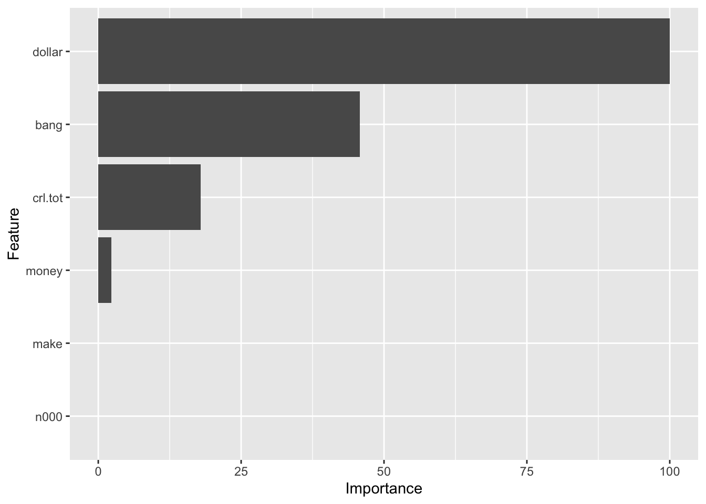
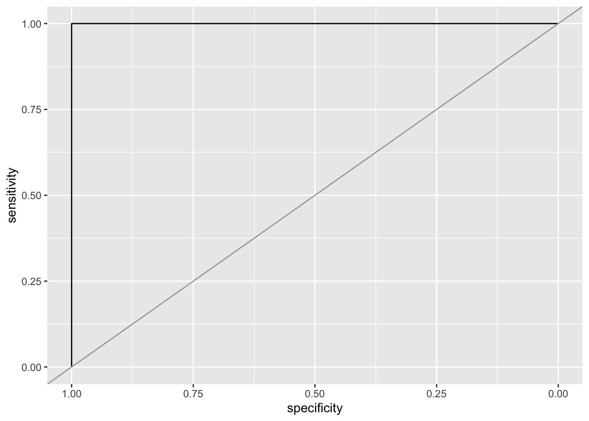

if(!require(pacman))
install.packages("pacman")Loading required package: pacmanpacman::p_load(tidyverse, rpart, rpart.plot, caret,
lattice, sampling, pROC, mlbench)if(!require(pacman))
install.packages("pacman")Loading required package: pacmanpacman::p_load(tidyverse, rpart, rpart.plot, caret,
lattice, sampling, pROC, mlbench)The spam data set from Tidy Tuesday classifies whether an email is spam or not and contains variables which indicate the frequency of certain words and characters in the email.
spam <- readr::read_csv('https://raw.githubusercontent.com/rfordatascience/tidytuesday/master/data/2023/2023-08-15/spam.csv')summary(spam) crl.tot dollar bang money
Min. : 1.0 Min. :0.00000 Min. : 0.0000 Min. : 0.00000
1st Qu.: 35.0 1st Qu.:0.00000 1st Qu.: 0.0000 1st Qu.: 0.00000
Median : 95.0 Median :0.00000 Median : 0.0000 Median : 0.00000
Mean : 283.3 Mean :0.07581 Mean : 0.2691 Mean : 0.09427
3rd Qu.: 266.0 3rd Qu.:0.05200 3rd Qu.: 0.3150 3rd Qu.: 0.00000
Max. :15841.0 Max. :6.00300 Max. :32.4780 Max. :12.50000
n000 make yesno
Min. :0.0000 Min. :0.0000 Length:4601
1st Qu.:0.0000 1st Qu.:0.0000 Class :character
Median :0.0000 Median :0.0000 Mode :character
Mean :0.1016 Mean :0.1046
3rd Qu.:0.0000 3rd Qu.:0.0000
Max. :5.4500 Max. :4.5400 rpart is a function that fits a decision tree model using recursive partitioning. We have provided the “yesno” variable to be partitioned.
pam <- drop_na(spam)
tree_default <- spam |>
rpart( spam$yesno~.,data=_)
tree_defaultn= 4601
node), split, n, loss, yval, (yprob)
* denotes terminal node
1) root 4601 1813 n (0.6059552 0.3940448)
2) dollar< 0.0555 3471 816 n (0.7649092 0.2350908)
4) bang< 0.0915 2420 246 n (0.8983471 0.1016529) *
5) bang>=0.0915 1051 481 y (0.4576594 0.5423406)
10) crl.tot< 85.5 535 175 n (0.6728972 0.3271028)
20) bang< 0.7735 418 106 n (0.7464115 0.2535885) *
21) bang>=0.7735 117 48 y (0.4102564 0.5897436)
42) crl.tot< 17 43 12 n (0.7209302 0.2790698) *
43) crl.tot>=17 74 17 y (0.2297297 0.7702703) *
11) crl.tot>=85.5 516 121 y (0.2344961 0.7655039) *
3) dollar>=0.0555 1130 133 y (0.1176991 0.8823009) *Here we try to predict if the email is spam or not based on the tree formed. For example, if n is dollar<0.056 then it goes towards yes and the next part of the tree is - bang < 0.092. That is, if n is lesser than that value then it can be assumed as not a spam. Hence the tree creates a classification for the dataset.
library(rpart.plot)
rpart.plot(tree_default, extra = 1)We specify control parameters to grow a fully unpruned tree, with a minimum node size of 2 and complexity pruning as 0, this allows the tree to grow until it perfectly fits the training data, resulting in a complex and overfit tree.
tree_colors <- c("gray", "green", "blue", "brown", "orange", "red", "purple")
tree_full <- spam |>
rpart(yesno ~ . , data = _,
control = rpart.control(minsplit = 2, cp = 0))
rpart.plot(tree_full, extra = 1,
roundint=FALSE,
box.palette = tree_colors) # specify 7 colorsWarning: labs do not fit even at cex 0.15, there may be some overplotting#tree_fullTraining error on tree with pre-pruning Here we are making predictions using a decision tree model (tree_default) on the spam data frame.
predict(tree_default, spam) |> head () n y
1 0.2344961 0.7655039
2 0.1176991 0.8823009
3 0.1176991 0.8823009
4 0.2344961 0.7655039
5 0.2344961 0.7655039
6 0.8983471 0.1016529Predicts whether email is spam or not.
pred <- predict(tree_default, spam, type = "class")
head(pred)1 2 3 4 5 6
y y y y y n
Levels: n yThe table compares the predicted value with the value in the spam data frame.
confusion_table <- with(spam, table(yesno, pred))
confusion_table pred
yesno n y
n 2517 271
y 364 1449The model correctly predicts the value 3966 times.
correct <- confusion_table |> diag() |> sum()
correct[1] 3966The model incorrectly predicts the value 635 times.
error <- confusion_table |> sum() - correct
error[1] 635The accuracy of the model is 86.2%
accuracy <- correct / (correct + error)
accuracy[1] 0.8619865Using a function for accuracy
accuracy <- function(truth, prediction) {
tbl <- table(truth, prediction)
sum(diag(tbl))/sum(tbl)
}
accuracy(spam |> pull(yesno), pred)[1] 0.8619865Training error of tree
accuracy(spam |> pull(yesno),
predict(tree_full, spam, type = "class"))[1] 0.9702239Get a confusion table with more statistics (using caret)
library(caret)
spam$yesno <- as.factor(spam$yesno)
confusionMatrix(data = pred,
reference = spam |> pull(yesno))Confusion Matrix and Statistics
Reference
Prediction n y
n 2517 364
y 271 1449
Accuracy : 0.862
95% CI : (0.8517, 0.8718)
No Information Rate : 0.606
P-Value [Acc > NIR] : < 2.2e-16
Kappa : 0.7084
Mcnemar's Test P-Value : 0.0002613
Sensitivity : 0.9028
Specificity : 0.7992
Pos Pred Value : 0.8737
Neg Pred Value : 0.8424
Prevalence : 0.6060
Detection Rate : 0.5471
Detection Prevalence : 0.6262
Balanced Accuracy : 0.8510
'Positive' Class : n
Set random number generator seed to make results reproducible.
set.seed(2000)Here, we partition data the 80% training and 20% testing. Test data is not used in the model building process and set aside for only testing the model.
inTrain <- createDataPartition(y = spam$yesno, p = .8, list = FALSE)
spam_train <- spam |> slice(inTrain)Warning: Slicing with a 1-column matrix was deprecated in dplyr 1.1.0.spam_test <- spam |> slice(-inTrain)The package caret combines training and validation for hyperparameter tuning into a single function called train(). It internally splits the data into training and validation sets and this will provide you with error estimates for different hyperparameter settings.
We can observe, as the value cp value increases, the accuracy drops.
fit <- spam_train |>
train(yesno ~ .,
data = _ ,
method = "rpart",
control = rpart.control(minsplit = 2),
trControl = trainControl(method = "cv", number = 10),
tuneLength = 5)
fitCART
3682 samples
6 predictor
2 classes: 'n', 'y'
No pre-processing
Resampling: Cross-Validated (10 fold)
Summary of sample sizes: 3313, 3314, 3314, 3314, 3314, 3314, ...
Resampling results across tuning parameters:
cp Accuracy Kappa
0.005513439 0.8590462 0.6991218
0.005858029 0.8560571 0.6938464
0.010682288 0.8468172 0.6737240
0.077877326 0.7976700 0.5604247
0.470709855 0.6727237 0.1948272
Accuracy was used to select the optimal model using the largest value.
The final value used for the model was cp = 0.005513439.The fitted decision tree model to plot.
rpart.plot(fit$finalModel, extra = 2,
box.palette = list("Gy", "Gn", "Bu", "Bn", "Or", "Rd", "Pu"))varImp(fit)rpart variable importance
Overall
bang 100.00
dollar 73.20
money 66.14
crl.tot 56.09
n000 48.78
make 0.00The variable importance is calculated from a fitted model object.
imp <- varImp(fit, compete = FALSE)
imprpart variable importance
Overall
dollar 100.000
bang 45.724
crl.tot 17.957
money 2.283
make 0.000
n000 0.000Dollar has the highest value at 100, the second highest is bang with around 47 and money, n000 and make are the last 3 values respectively.
ggplot(imp)
Using the best model on the test data.
pred <- predict(fit, newdata = spam_test)
pred [1] y y n y y y y y y y y y y y y n y y y n n y n y y y y y y y n y y n n y y
[38] y y n y y y y y n y n y y y y y y y y n n y y y y y y y y y y y y y y y n
[75] n y y n y y y n y y y y y n y n n y n y y y n y y y y y y y y n y y n y y
[112] n y y y n y y y n y y y y y y y y y y y y n y y n y y n y y y y y y y y n
[149] y y y y y y y n y y y n y y y y y n y y y n y n y y n n y y y y y y y y y
[186] y n n n n y y y y y y y y y y n y y y y y y y y y y y y y y y y y y n n y
[223] y y y y y y n y y y y y y y y y y y y n n y y y y y y y n n y y y y n y y
[260] y y y y y n y y y y n n y y y y n y y y n n y n n y y y y y y y n n y n y
[297] y y y y y y y y y y n y n y n n y n y y y y y y y y y y n y n y y y n y y
[334] y y y n y n y n y y y y n y y y y y y y y y y y n y n y n n n n n n n n n
[371] y n n n n n n n n y n n n n n n n n n n n n n n n n n n n n y n n n n n y
[408] n n y n n n n n n n n n n n y n n n y n n n n n n n n n y n n n n n n n n
[445] y n n n n n n n n n n n n n n y n n n n n n n n y n n n n n n n n n y n n
[482] n n n n n n n n n n n n y n n n n n n n n n n n n n n n n n n n n n n y n
[519] y n n n n n n y n n n n n n n n n n n n n n n n n n n n n n n n n n n n n
[556] n n n n n n n n n n n n n n n n n n n n n n n n n n n n n y n n n n n n y
[593] n n n n n n n y n n n n n n n n n n y n n n n n n n n n n n n n n n n n n
[630] n n n n n n n n n n n n n n n n n n n n n n n n n n n n n n n n n n n n n
[667] n n n n n n n n n y n n n n n n n n n n n n n n y y n n n n n n n n n n n
[704] n y n n n n n n n n n n n n n n n n n n n n n n n n n n n n n n n n n n n
[741] n n n n n n n n n n n n n n n n n n n n n n n n n n y n y n n n n n n n n
[778] n n n n n n n n n n n n n n y n n n n n n n n n n n n n n n n n n n y n y
[815] n n n n n n n n n n n n n n n n n n n y n n n n n n n n n n y n n n n n n
[852] n n n n y n n n n n y n n y n n n n n n n n n y n n n n n n y n n y n n y
[889] n n y n n n n y n n n n n y n n n n n n n n n n n n n n n n n
Levels: n yThe confusion matrix is giving an error due to arguments not having the same length.
We will compare decision trees with a k-nearest neighbors (kNN) classifier. We will create a fixed sampling scheme (10-folds) so we compare the different models using exactly the same folds. It is specified as trControl during training.
train_index <- createFolds(spam_train$yesno, k = 10)Build models
Rpart -
rpartFit <- spam_train |>
train(yesno ~ .,
data = _,
method = "rpart",
tuneLength = 10,
trControl = trainControl(method = "cv", indexOut = train_index)
)KNN -
knnFit <- spam_train |>
train(yesno ~ .,
data = _,
method = "knn",
preProcess = "scale",
tuneLength = 10,
trControl = trainControl(method = "cv", indexOut = train_index)
)Compare accuracy over all folds.
K-Nearest Neighbor and CART both have produce high accuracy bur Kappa is at 0.7 and 0.8 max value respectively.
resamps <- resamples(list(
CART = rpartFit,
kNearestNeighbors = knnFit
))
summary(resamps)
Call:
summary.resamples(object = resamps)
Models: CART, kNearestNeighbors
Number of resamples: 10
Accuracy
Min. 1st Qu. Median Mean 3rd Qu. Max.
CART 0.8668478 0.8777174 0.8858696 0.8859329 0.8967391 0.9048913
kNearestNeighbors 0.8726287 0.8838315 0.8873829 0.8883808 0.8913043 0.9048913
NA's
CART 0
kNearestNeighbors 0
Kappa
Min. 1st Qu. Median Mean 3rd Qu. Max.
CART 0.7153322 0.7366245 0.7547912 0.7560099 0.7808575 0.7966658
kNearestNeighbors 0.7267054 0.7511041 0.7596024 0.7611225 0.7684565 0.7966658
NA's
CART 0
kNearestNeighbors 0A boxplot with the accuracy and kappa data for KNN and CART.
library(lattice)
bwplot(resamps, layout = c(3, 1))
difs <- diff(resamps)
difs
Call:
diff.resamples(x = resamps)
Models: CART, kNearestNeighbors
Metrics: Accuracy, Kappa
Number of differences: 1
p-value adjustment: bonferroni summary(difs)
Call:
summary.diff.resamples(object = difs)
p-value adjustment: bonferroni
Upper diagonal: estimates of the difference
Lower diagonal: p-value for H0: difference = 0
Accuracy
CART kNearestNeighbors
CART -0.002448
kNearestNeighbors 0.5788
Kappa
CART kNearestNeighbors
CART -0.005113
kNearestNeighbors 0.595 library(rpart)
library(rpart.plot)spam_yesno <- spam |>
mutate(type = factor(spam$yesno == "y",
levels = c(FALSE, TRUE),
labels = c("yes", "no")))We can observe that there is a class imbalance as the value yes has 2788 observations while no has 1813.
summary(spam_yesno) crl.tot dollar bang money
Min. : 1.0 Min. :0.00000 Min. : 0.0000 Min. : 0.00000
1st Qu.: 35.0 1st Qu.:0.00000 1st Qu.: 0.0000 1st Qu.: 0.00000
Median : 95.0 Median :0.00000 Median : 0.0000 Median : 0.00000
Mean : 283.3 Mean :0.07581 Mean : 0.2691 Mean : 0.09427
3rd Qu.: 266.0 3rd Qu.:0.05200 3rd Qu.: 0.3150 3rd Qu.: 0.00000
Max. :15841.0 Max. :6.00300 Max. :32.4780 Max. :12.50000
n000 make yesno type
Min. :0.0000 Min. :0.0000 n:2788 yes:2788
1st Qu.:0.0000 1st Qu.:0.0000 y:1813 no :1813
Median :0.0000 Median :0.0000
Mean :0.1016 Mean :0.1046
3rd Qu.:0.0000 3rd Qu.:0.0000
Max. :5.4500 Max. :4.5400 A bar plot is plotted with the above data.
ggplot(spam_yesno, aes(y = type)) + geom_bar()Creating the test and training data. A 50/50 split is used here.
set.seed(1234)
inTrain <- createDataPartition(y = spam$yesno, p = .5, list = FALSE)
training_yesno <- spam_yesno |> slice(inTrain)
testing_yesno <- spam_yesno |> slice(-inTrain)Training a decision tree model on the training data using the cross validation method
fit <- training_yesno |>
train(yesno ~ .,
data = _,
method = "rpart",
trControl = trainControl(method = "cv"))The CART model has a perfect accuracy of 1 at cp = 0 and 0.5 with Kappa value also as 1 for the two cases.
fitCART
2301 samples
7 predictor
2 classes: 'n', 'y'
No pre-processing
Resampling: Cross-Validated (10 fold)
Summary of sample sizes: 2072, 2071, 2070, 2071, 2071, 2070, ...
Resampling results across tuning parameters:
cp Accuracy Kappa
0.0 1.0000000 1
0.5 1.0000000 1
1.0 0.6058243 0
Accuracy was used to select the optimal model using the largest value.
The final value used for the model was cp = 0.5.rpart.plot(fit$finalModel, extra = 2)
We resample the data so that n and y values have a 50/50 split.
library(sampling)
set.seed(1000) # for repeatability
id <- strata(training_yesno, stratanames = "yesno", size = c(50, 50), method = "srswr")
training_yesno_balanced <- training_yesno |>
slice(id$ID_unit)
table(training_yesno_balanced$yesno)
n y
50 50 The CART model has a perfect accuracy of 1 at cp = 0 and 0.5 with Kappa value also as 1 for the two cases. The accuracy drops to 0.5 when cp = 1
fit <- training_yesno_balanced |>
train(yesno ~ .,
data = _,
method = "rpart",
trControl = trainControl(method = "cv"),
control = rpart.control(minsplit = 5))
fitCART
100 samples
7 predictor
2 classes: 'n', 'y'
No pre-processing
Resampling: Cross-Validated (10 fold)
Summary of sample sizes: 90, 90, 90, 90, 90, 90, ...
Resampling results across tuning parameters:
cp Accuracy Kappa
0.0 1.0 1
0.5 1.0 1
1.0 0.5 0
Accuracy was used to select the optimal model using the largest value.
The final value used for the model was cp = 0.5.rpart.plot(fit$finalModel, extra = 2)testing_yesno$yesno <- as.factor(testing_yesno$yesno)
confusionMatrix(data = predict(fit, testing_yesno),
ref = testing_yesno$yesno, positive = "y")Confusion Matrix and Statistics
Reference
Prediction n y
n 1394 0
y 0 906
Accuracy : 1
95% CI : (0.9984, 1)
No Information Rate : 0.6061
P-Value [Acc > NIR] : < 2.2e-16
Kappa : 1
Mcnemar's Test P-Value : NA
Sensitivity : 1.0000
Specificity : 1.0000
Pos Pred Value : 1.0000
Neg Pred Value : 1.0000
Prevalence : 0.3939
Detection Rate : 0.3939
Detection Prevalence : 0.3939
Balanced Accuracy : 1.0000
'Positive' Class : y
id <- strata(training_yesno, stratanames = "yesno", size = c(50, 100), method = "srswr")
training_yesno_balanced <- training_yesno |>
slice(id$ID_unit)
table(training_yesno_balanced$type)
yes no
100 50 Here Accuracy is 1 using the CART model, indicating perfect accuracy.
fit <- training_yesno_balanced |>
train(yesno ~ .,
data = _,
method = "rpart",
trControl = trainControl(method = "cv"),
control = rpart.control(minsplit = 5))
training_yesno$yesno <- as.factor(training_yesno$yesno)
confusionMatrix(data = predict(fit, testing_yesno),
ref = testing_yesno$yesno, positive = "y")Confusion Matrix and Statistics
Reference
Prediction n y
n 1394 0
y 0 906
Accuracy : 1
95% CI : (0.9984, 1)
No Information Rate : 0.6061
P-Value [Acc > NIR] : < 2.2e-16
Kappa : 1
Mcnemar's Test P-Value : NA
Sensitivity : 1.0000
Specificity : 1.0000
Pos Pred Value : 1.0000
Neg Pred Value : 1.0000
Prevalence : 0.3939
Detection Rate : 0.3939
Detection Prevalence : 0.3939
Balanced Accuracy : 1.0000
'Positive' Class : y
We are evaluating the model’s performance using cross-validation with the ROC (Receiver Operating Characteristic) metric.
fit <- training_yesno |>
train(yesno ~ .,
data = _,
method = "rpart",
tuneLength = 10,
trControl = trainControl(method = "cv",
classProbs = TRUE, ## necessary for predict with type="prob"
summaryFunction=twoClassSummary), ## necessary for ROC
metric = "ROC",
control = rpart.control(minsplit = 3))The model with cp = 0.8888889 was chosen as the final model for binary classification. This model is expected to have good performance in distinguishing between y and n, with an ROC of 1.0.
fitCART
2301 samples
7 predictor
2 classes: 'n', 'y'
No pre-processing
Resampling: Cross-Validated (10 fold)
Summary of sample sizes: 2072, 2071, 2072, 2071, 2071, 2070, ...
Resampling results across tuning parameters:
cp ROC Sens Spec
0.0000000 1.0 1 1
0.1111111 1.0 1 1
0.2222222 1.0 1 1
0.3333333 1.0 1 1
0.4444444 1.0 1 1
0.5555556 1.0 1 1
0.6666667 1.0 1 1
0.7777778 1.0 1 1
0.8888889 1.0 1 1
1.0000000 0.5 1 0
ROC was used to select the optimal model using the largest value.
The final value used for the model was cp = 0.8888889.rpart.plot(fit$finalModel, extra = 2)Create a classifier
prob <- predict(fit, testing_yesno, type = "prob")
tail(prob) n y
2295 1 0
2296 1 0
2297 1 0
2298 1 0
2299 1 0
2300 1 0pred <- as.factor(ifelse(prob[,"y"]>=0.01, "yes", "no"))
#confusionMatrix(data = pred,
#ref = testing_yesno$yesno, positive = "y")library("pROC")
r <- roc(testing_yesno$yesno == "y", prob[,"y"])Setting levels: control = FALSE, case = TRUESetting direction: controls < casesr
Call:
roc.default(response = testing_yesno$yesno == "y", predictor = prob[, "y"])
Data: prob[, "y"] in 1394 controls (testing_yesno$yesno == "y" FALSE) < 906 cases (testing_yesno$yesno == "y" TRUE).
Area under the curve: 1The plot shows sensitivity vs. specificity.
ggroc(r) + geom_abline(intercept = 1, slope = 1, color = "darkgrey")
cost <- matrix(c(
0, 1,
100, 0
), byrow = TRUE, nrow = 2)
cost [,1] [,2]
[1,] 0 1
[2,] 100 0The loss parameter is used to specify the error costs for different classes.
fit <- training_yesno |>
train(yesno ~ .,
data = _,
method = "rpart",
parms = list(loss = cost),
trControl = trainControl(method = "cv"))fitCART
2301 samples
7 predictor
2 classes: 'n', 'y'
No pre-processing
Resampling: Cross-Validated (10 fold)
Summary of sample sizes: 2071, 2070, 2070, 2070, 2071, 2072, ...
Resampling results across tuning parameters:
cp Accuracy Kappa
0.0 1.0000000 1
0.5 1.0000000 1
1.0 0.3941757 0
Accuracy was used to select the optimal model using the largest value.
The final value used for the model was cp = 0.5.rpart.plot(fit$finalModel, extra = 2)#confusionMatrix(data = predict(fit, testing_reptile),
#ref = testing_reptile$type, positive = "reptile")